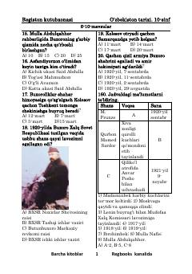

OT10-sinf o'zbekiston tarixi fanidan mavzulashtirilgan testlar to'plami.
Ushbu qo'llanma 10-sinf o'quvchilari uchun O'zbekiston tarixi fanidan mavzulashtirilgan universal test savollari va javoblarini o'z ichiga oladi. Material o'quvchilarning bilimini mustahkamlash hamda imtihonlarga tayyorgarlik ko'rishi uchun mo'ljallangan.